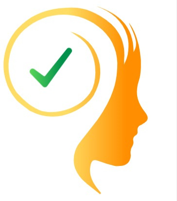

Therapy & Counselling
A safe, confidential space to talk, understand, heal and move forward with qualified mental-health professionals.
Explore TherapyProfessional support, guidance and consultation — available for anyone, anytime, anywhere.
Whether you need someone to talk to, professional counselling, specialist guidance or expert consultation, Soch Matters connects you with trusted professionals in a safe and confidential environment.
Need Help Right Now?
Three ways to get the right kind of help, at the right time.
A safe, confidential space to talk, understand, heal and move forward with qualified mental-health professionals.
Explore TherapyConnect with experienced specialists for professional guidance, consultation and informed decision-making.
Find a SpecialistWhen you need support right now, access our immediate support pathway and find the right next step.
Get Immediate SupportAccess support across borders.
Flexible scheduling around your life.
Your privacy matters.
Connect with qualified specialists.
Technology makes access easier; people provide the support.
A safe and respectful environment.
Soch Matters was built with accessibility in mind — connecting people with trusted professionals regardless of where they live.
Availability of regulated services depends on where the relevant professional is legally able to provide them.
Whenever you're ready, Soch Matters is here.
For Anyone. Anytime. Anywhere.